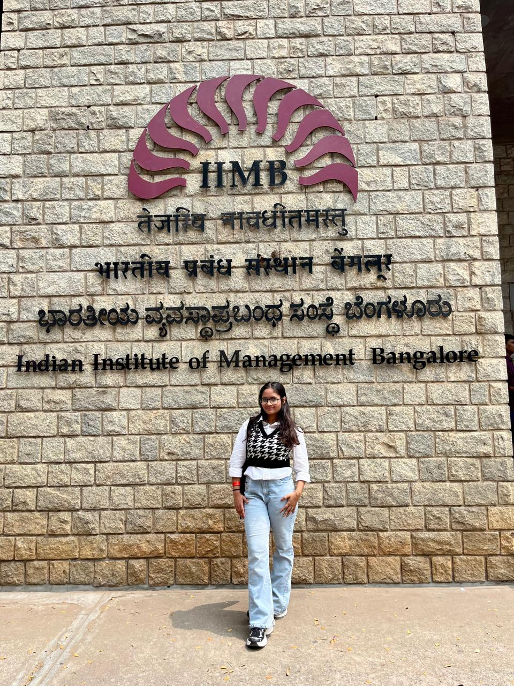
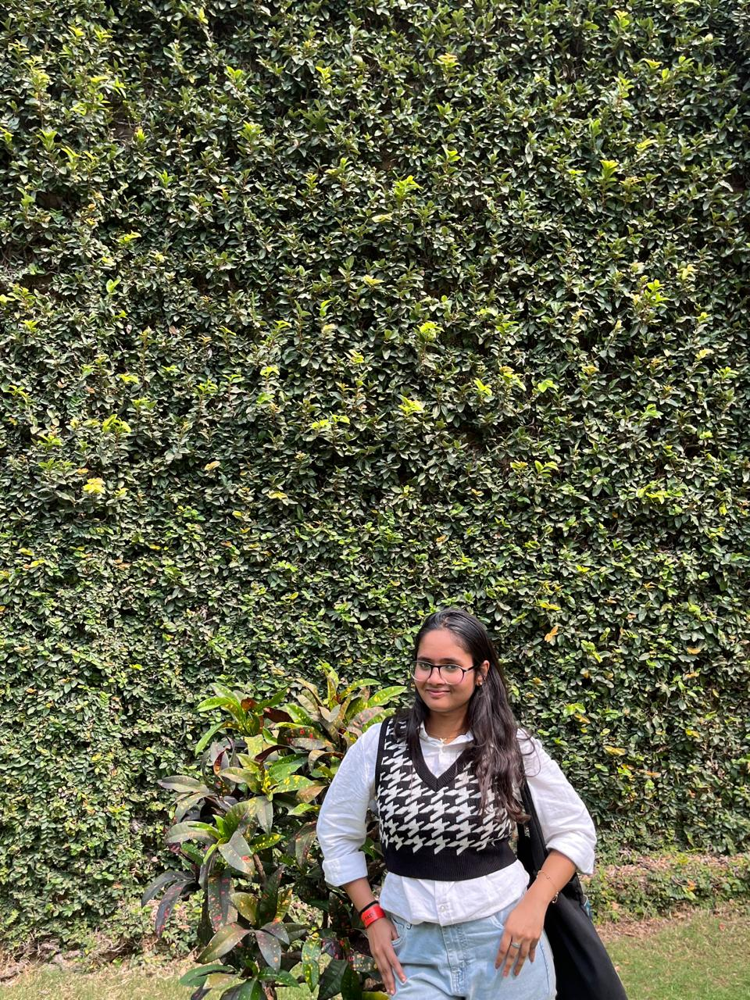

Highly driven and academically accomplished undergraduate pursuing dual degrees in Engineering and Business. Passionate about integrating modern systems with traditional Indian knowledge to create meaningful impact.

B.E. Industrial Engineering & Management (2024–Present)
BBA Digital Business & Entrepreneurship (2024–Present)
97.17% – Topper